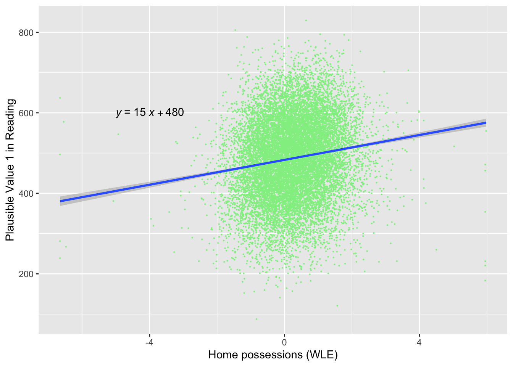
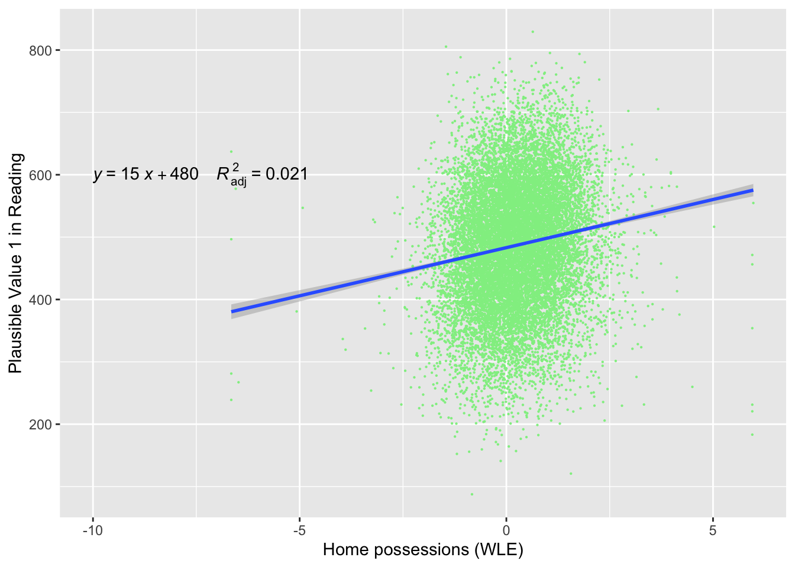
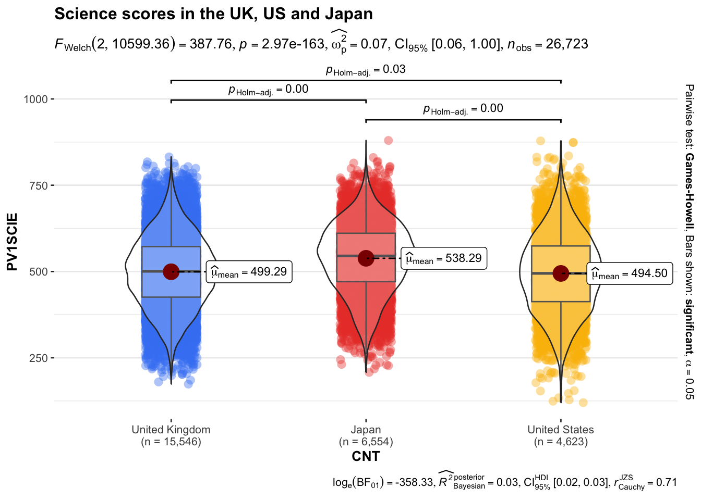

Questions and Answers
1 Questions about R
1.1 Why doesn’t my select/filter statement work?
When you are loading packages, sometimes different packages have the same function names in them, and the functions themselves will do very different things. For example, there is a select function in the tidyverse, but also another select function in the package MASS that does something very different. If we load the tidyverse before loading MASS, then the MASS version of select is the one that will be used?!
To get around this make sure that you load the tidyverse after MASS, to be safe you should always load the tidyverse last.
you can also specify the package that select comes from (in this case from a package within the tidyverse called dplyr):
Finally, there is a package that helps you deal with conflicts called conflicted. At the top of your script you can define which version of a function you prefer, this will be the version that will always be used. If you want to specify another version of a function, you can still use other versions of the function using the :: notation:
To find out if you have any conflicts, you can run conflict_scout().
1.2 How can I unload packages
If you are finding yourself with a conflict as mentioned above and want to unload packages, then you need to run the following code:
# adapted from: @mmfrgmpds https://stackoverflow.com/questions/7505547/detach-all-packages-while-working-in-r
while(!is.null(sessionInfo()$loadedOnly)){
lapply(names(sessionInfo()$loadedOnly), require, character.only = TRUE)
invisible(lapply(paste0('package:', names(sessionInfo()$otherPkgs)), detach, character.only=TRUE, unload=TRUE, force=TRUE))
}1.3 Why am I getting the error ‘could not find function “%>%”’
The pipe operator %>% is loaded when you load the tidyverse package - make sure you have installed tidyverse and loaded it
1.4 I am getting the error: ‘“Error: Mapping should be created with aes() or aes_().”’ when using ggplot
This may be caused by having a bracket after the geom rather than before it
1.5 My axis labels are too long
If you want to use long axis titles you may find they overrun the space available
To insert a line break in the axis label, add \n to the text where you want line breaks.
1.6 How can I find out the full item labels in the PISA data frame?
The code below will give you a list of all the item labels
1.7 How do I turn a data frame into a form I can put into an assingment or paper?
You can use the gt package to convert data frames to aesthetically pleasing outputs.
# load the gt package - you will need to run install.packages("gt") the first time
# install.packages("gt")
library(gt)
# Make the data frame you want to output
science_mean_scores <- PISA_2025 %>%
group_by(CNT) %>%
summarise(mean_science_score = mean(PV1SCIE, na.rm = TRUE),
sd_science = sd(PV1SCIE, na.rm =TRUE))
# Use gt to produce an output - you can copy and paste the table from the
# viewer window to your report
gt(science_mean_scores)| Country code 3-character | mean_science_score | sd_science |
|---|---|---|
| Albania | 432.4281 | 79.14059 |
| United Arab Emirates | 457.4203 | 109.82299 |
| Argentina | 413.3763 | 92.57370 |
| Armenia | 367.4886 | 75.59714 |
| Australia | 508.6009 | 105.15478 |
| Austria | 501.7455 | 101.80001 |
| Azerbaijan | 412.1117 | 91.05227 |
| Belgium | 495.5779 | 100.14176 |
| Bulgaria | 423.2569 | 106.48583 |
| Brazil | 399.0440 | 91.38031 |
| Brunei Darussalam | 439.9822 | 92.19128 |
| Canada | 499.9853 | 98.76908 |
| Switzerland | 498.4588 | 100.97681 |
| Chile | 453.5808 | 89.29132 |
| Colombia | 420.0763 | 90.02869 |
| Costa Rica | 421.7050 | 77.24976 |
| Czechia | 502.6472 | 99.51631 |
| Germany | 491.9485 | 108.37352 |
| Denmark | 467.6772 | 97.08731 |
| Dominican Republic | 361.8216 | 75.52527 |
| Ecuador | 399.3227 | 74.68495 |
| Spain | 480.8942 | 92.11851 |
| Estonia | 528.0440 | 88.07974 |
| Finland | 504.2821 | 103.45282 |
| France | 482.2148 | 104.59241 |
| United Kingdom | 499.2894 | 102.73115 |
| Georgia | 421.2032 | 86.14834 |
| Greece | 439.6112 | 91.96649 |
| Guatemala | 351.1695 | 73.10073 |
| Hong Kong (China) | 492.0840 | 101.84843 |
| Croatia | 474.9573 | 94.58671 |
| Hungary | 484.3828 | 94.15526 |
| Indonesia | 400.5709 | 69.55577 |
| Ireland | 499.9400 | 93.18902 |
| Iceland | 441.8888 | 98.49023 |
| Israel | 445.4241 | 111.75091 |
| Italy | 486.9309 | 91.69522 |
| Jordan | 411.1776 | 82.41872 |
| Japan | 538.2875 | 100.15806 |
| Kazakhstan | 437.9131 | 88.41570 |
| Kenya | 337.6840 | 78.52871 |
| Kyrgyzstan | 361.9658 | 67.98218 |
| Cambodia | 373.7914 | 63.44073 |
| Korea | 529.9800 | 103.35484 |
| Kosovo | 356.0825 | 68.88534 |
| Lebanon | 376.7712 | 98.24305 |
| Lithuania | 483.0562 | 89.77530 |
| Luxembourg | 474.7009 | 113.87686 |
| Latvia | 466.4139 | 94.55804 |
| Macao (China) | 540.7194 | 87.57541 |
| Morocco | 352.3287 | 73.74669 |
| Moldova | 423.5352 | 86.85450 |
| Mexico | 416.2101 | 73.07072 |
| North Macedonia | 378.7864 | 88.85643 |
| Malta | 454.5762 | 109.75517 |
| Montenegro | 435.7501 | 87.60188 |
| Mongolia | 426.8072 | 81.03038 |
| Mauritius | 438.3996 | 100.25410 |
| Malaysia | 420.7287 | 79.45867 |
| Netherlands | 488.7326 | 110.08377 |
| Norway | 470.7689 | 102.15515 |
| New Zealand | 512.5801 | 107.01661 |
| Peru | 407.3558 | 79.91204 |
| Philippines | 391.6583 | 98.07806 |
| Poland | 498.3989 | 95.42859 |
| Portugal | 486.7327 | 95.46983 |
| Paraguay | 359.0941 | 79.52889 |
| Palestinian Authority | 358.5718 | 70.34392 |
| Qatar | 429.3942 | 100.91447 |
| B-S-J-Z (China) | 603.0789 | 88.35096 |
| Kurdistan Region (Iraq) | 354.3673 | 64.34698 |
| Dushanbe (Tajikistan) | 332.6422 | 64.43668 |
| Ukrainian regions (17 of 27) | 448.0700 | 91.17088 |
| Romania | 436.6442 | 100.68717 |
| Rwanda | 318.5845 | 77.29690 |
| Saudi Arabia | 417.2877 | 83.89952 |
| Singapore | 558.9599 | 106.11431 |
| El Salvador | 386.2407 | 77.18796 |
| Serbia | 428.1673 | 90.82304 |
| Slovak Republic | 476.0004 | 99.64621 |
| Slovenia | 471.5709 | 99.95716 |
| Sweden | 485.2962 | 108.02861 |
| Chinese Taipei | 533.8934 | 107.72693 |
| Thailand | 446.2018 | 92.84765 |
| Türkiye | 497.6377 | 97.73698 |
| Uruguay | 444.3767 | 88.12624 |
| United States | 494.4993 | 112.84055 |
| Uzbekistan | 445.1451 | 77.11303 |
| Viet Nam | 458.7366 | 80.08272 |
| Zambia | 318.3025 | 94.84800 |
| Mean science scores | ||
| PISA 2022 data | ||
| Country code 3-character | mean_science_score | sd_science |
|---|---|---|
| Albania | 432.4281 | 79.14059 |
| United Arab Emirates | 457.4203 | 109.82299 |
| Argentina | 413.3763 | 92.57370 |
| Armenia | 367.4886 | 75.59714 |
| Australia | 508.6009 | 105.15478 |
| Austria | 501.7455 | 101.80001 |
| Azerbaijan | 412.1117 | 91.05227 |
| Belgium | 495.5779 | 100.14176 |
| Bulgaria | 423.2569 | 106.48583 |
| Brazil | 399.0440 | 91.38031 |
| Brunei Darussalam | 439.9822 | 92.19128 |
| Canada | 499.9853 | 98.76908 |
| Switzerland | 498.4588 | 100.97681 |
| Chile | 453.5808 | 89.29132 |
| Colombia | 420.0763 | 90.02869 |
| Costa Rica | 421.7050 | 77.24976 |
| Czechia | 502.6472 | 99.51631 |
| Germany | 491.9485 | 108.37352 |
| Denmark | 467.6772 | 97.08731 |
| Dominican Republic | 361.8216 | 75.52527 |
| Ecuador | 399.3227 | 74.68495 |
| Spain | 480.8942 | 92.11851 |
| Estonia | 528.0440 | 88.07974 |
| Finland | 504.2821 | 103.45282 |
| France | 482.2148 | 104.59241 |
| United Kingdom | 499.2894 | 102.73115 |
| Georgia | 421.2032 | 86.14834 |
| Greece | 439.6112 | 91.96649 |
| Guatemala | 351.1695 | 73.10073 |
| Hong Kong (China) | 492.0840 | 101.84843 |
| Croatia | 474.9573 | 94.58671 |
| Hungary | 484.3828 | 94.15526 |
| Indonesia | 400.5709 | 69.55577 |
| Ireland | 499.9400 | 93.18902 |
| Iceland | 441.8888 | 98.49023 |
| Israel | 445.4241 | 111.75091 |
| Italy | 486.9309 | 91.69522 |
| Jordan | 411.1776 | 82.41872 |
| Japan | 538.2875 | 100.15806 |
| Kazakhstan | 437.9131 | 88.41570 |
| Kenya | 337.6840 | 78.52871 |
| Kyrgyzstan | 361.9658 | 67.98218 |
| Cambodia | 373.7914 | 63.44073 |
| Korea | 529.9800 | 103.35484 |
| Kosovo | 356.0825 | 68.88534 |
| Lebanon | 376.7712 | 98.24305 |
| Lithuania | 483.0562 | 89.77530 |
| Luxembourg | 474.7009 | 113.87686 |
| Latvia | 466.4139 | 94.55804 |
| Macao (China) | 540.7194 | 87.57541 |
| Morocco | 352.3287 | 73.74669 |
| Moldova | 423.5352 | 86.85450 |
| Mexico | 416.2101 | 73.07072 |
| North Macedonia | 378.7864 | 88.85643 |
| Malta | 454.5762 | 109.75517 |
| Montenegro | 435.7501 | 87.60188 |
| Mongolia | 426.8072 | 81.03038 |
| Mauritius | 438.3996 | 100.25410 |
| Malaysia | 420.7287 | 79.45867 |
| Netherlands | 488.7326 | 110.08377 |
| Norway | 470.7689 | 102.15515 |
| New Zealand | 512.5801 | 107.01661 |
| Peru | 407.3558 | 79.91204 |
| Philippines | 391.6583 | 98.07806 |
| Poland | 498.3989 | 95.42859 |
| Portugal | 486.7327 | 95.46983 |
| Paraguay | 359.0941 | 79.52889 |
| Palestinian Authority | 358.5718 | 70.34392 |
| Qatar | 429.3942 | 100.91447 |
| B-S-J-Z (China) | 603.0789 | 88.35096 |
| Kurdistan Region (Iraq) | 354.3673 | 64.34698 |
| Dushanbe (Tajikistan) | 332.6422 | 64.43668 |
| Ukrainian regions (17 of 27) | 448.0700 | 91.17088 |
| Romania | 436.6442 | 100.68717 |
| Rwanda | 318.5845 | 77.29690 |
| Saudi Arabia | 417.2877 | 83.89952 |
| Singapore | 558.9599 | 106.11431 |
| El Salvador | 386.2407 | 77.18796 |
| Serbia | 428.1673 | 90.82304 |
| Slovak Republic | 476.0004 | 99.64621 |
| Slovenia | 471.5709 | 99.95716 |
| Sweden | 485.2962 | 108.02861 |
| Chinese Taipei | 533.8934 | 107.72693 |
| Thailand | 446.2018 | 92.84765 |
| Türkiye | 497.6377 | 97.73698 |
| Uruguay | 444.3767 | 88.12624 |
| United States | 494.4993 | 112.84055 |
| Uzbekistan | 445.1451 | 77.11303 |
| Viet Nam | 458.7366 | 80.08272 |
| Zambia | 318.3025 | 94.84800 |
| Mean science scores | ||
| PISA 2022 data | ||
| Country | mean_science_score | sd_science |
|---|---|---|
| Albania | 432.4 | 79.1 |
| United Arab Emirates | 457.4 | 109.8 |
| Argentina | 413.4 | 92.6 |
| Armenia | 367.5 | 75.6 |
| Australia | 508.6 | 105.2 |
| Austria | 501.7 | 101.8 |
| Azerbaijan | 412.1 | 91.1 |
| Belgium | 495.6 | 100.1 |
| Bulgaria | 423.3 | 106.5 |
| Brazil | 399.0 | 91.4 |
| Brunei Darussalam | 440.0 | 92.2 |
| Canada | 500.0 | 98.8 |
| Switzerland | 498.5 | 101.0 |
| Chile | 453.6 | 89.3 |
| Colombia | 420.1 | 90.0 |
| Costa Rica | 421.7 | 77.2 |
| Czechia | 502.6 | 99.5 |
| Germany | 491.9 | 108.4 |
| Denmark | 467.7 | 97.1 |
| Dominican Republic | 361.8 | 75.5 |
| Ecuador | 399.3 | 74.7 |
| Spain | 480.9 | 92.1 |
| Estonia | 528.0 | 88.1 |
| Finland | 504.3 | 103.5 |
| France | 482.2 | 104.6 |
| United Kingdom | 499.3 | 102.7 |
| Georgia | 421.2 | 86.1 |
| Greece | 439.6 | 92.0 |
| Guatemala | 351.2 | 73.1 |
| Hong Kong (China) | 492.1 | 101.8 |
| Croatia | 475.0 | 94.6 |
| Hungary | 484.4 | 94.2 |
| Indonesia | 400.6 | 69.6 |
| Ireland | 499.9 | 93.2 |
| Iceland | 441.9 | 98.5 |
| Israel | 445.4 | 111.8 |
| Italy | 486.9 | 91.7 |
| Jordan | 411.2 | 82.4 |
| Japan | 538.3 | 100.2 |
| Kazakhstan | 437.9 | 88.4 |
| Kenya | 337.7 | 78.5 |
| Kyrgyzstan | 362.0 | 68.0 |
| Cambodia | 373.8 | 63.4 |
| Korea | 530.0 | 103.4 |
| Kosovo | 356.1 | 68.9 |
| Lebanon | 376.8 | 98.2 |
| Lithuania | 483.1 | 89.8 |
| Luxembourg | 474.7 | 113.9 |
| Latvia | 466.4 | 94.6 |
| Macao (China) | 540.7 | 87.6 |
| Morocco | 352.3 | 73.7 |
| Moldova | 423.5 | 86.9 |
| Mexico | 416.2 | 73.1 |
| North Macedonia | 378.8 | 88.9 |
| Malta | 454.6 | 109.8 |
| Montenegro | 435.8 | 87.6 |
| Mongolia | 426.8 | 81.0 |
| Mauritius | 438.4 | 100.3 |
| Malaysia | 420.7 | 79.5 |
| Netherlands | 488.7 | 110.1 |
| Norway | 470.8 | 102.2 |
| New Zealand | 512.6 | 107.0 |
| Peru | 407.4 | 79.9 |
| Philippines | 391.7 | 98.1 |
| Poland | 498.4 | 95.4 |
| Portugal | 486.7 | 95.5 |
| Paraguay | 359.1 | 79.5 |
| Palestinian Authority | 358.6 | 70.3 |
| Qatar | 429.4 | 100.9 |
| B-S-J-Z (China) | 603.1 | 88.4 |
| Kurdistan Region (Iraq) | 354.4 | 64.3 |
| Dushanbe (Tajikistan) | 332.6 | 64.4 |
| Ukrainian regions (17 of 27) | 448.1 | 91.2 |
| Romania | 436.6 | 100.7 |
| Rwanda | 318.6 | 77.3 |
| Saudi Arabia | 417.3 | 83.9 |
| Singapore | 559.0 | 106.1 |
| El Salvador | 386.2 | 77.2 |
| Serbia | 428.2 | 90.8 |
| Slovak Republic | 476.0 | 99.6 |
| Slovenia | 471.6 | 100.0 |
| Sweden | 485.3 | 108.0 |
| Chinese Taipei | 533.9 | 107.7 |
| Thailand | 446.2 | 92.8 |
| Türkiye | 497.6 | 97.7 |
| Uruguay | 444.4 | 88.1 |
| United States | 494.5 | 112.8 |
| Uzbekistan | 445.1 | 77.1 |
| Viet Nam | 458.7 | 80.1 |
| Zambia | 318.3 | 94.8 |
## If you have an output from a linear model, there is an additional step to do before using gt
# You need to use the broom package, which has the `tidy` function which gets the output of `lm`
# Into a suitable format for turning into a table
# install.packages("broom")
library(broom)
# Create example dataframe
UK_PISA <- PISA_2025 %>%
select(PV1SCIE, PV1MATH, CNT) %>%
filter(CNT == "United Kingdom")
# Run the model
uk_mod <- lm(data = UK_PISA, PV1SCIE ~ PV1MATH)
# tidy the model
uk_mod_tidy <- tidy(uk_mod)
# pass to gt to produce nice output
gt(uk_mod_tidy)| term | estimate | std.error | statistic | p.value |
|---|---|---|---|---|
| (Intercept) | 64.0899676 | 1.821413911 | 35.18693 | 4.878522e-261 |
| PV1MATH | 0.9117689 | 0.003734344 | 244.15773 | 0.000000e+00 |
1.8 How do I report the results of tests in APA format?
When you have run some tests, the outputs (for example the degrees of freedom, test statistic and p-value) should be formatted in your paper in line with the citation convention of the journal or assessment (for example, KCL assignments follow the American Psychological Association (APA) citation style). You can find a general guide to presenting your results in APA style here: APA numbers and statistics style guide.
For example, to report a chi-square result:
Chi-squared test for given probabilities
data: cont_tab
X-squared = 24.886, df = 1, p-value = 6.081e-07A chi-square test of goodness-of-fit was conducted to compare the observed frequencies in the contingency table to the expected frequencies (equal numbers of boys and girls). The result was not statistically significant, χ²(1, N = 12973) = 2.44, p = .12, indicating no significant difference between the observed and expected frequencies.
To report a t-test of the mathematics scores of girls and boys in the UK:
Welch Two Sample t-test
data: PV1MATH by ST004D01T
t = -11.479, df = 15542, p-value < 2.2e-16
alternative hypothesis: true difference in means between group Female and group Male is not equal to 0
95 percent confidence interval:
-21.50046 -15.22884
sample estimates:
mean in group Female mean in group Male
467.7636 486.1283 The output of that test would be reported as follows:
The results of a Welch’s t-test indicated a statistically significant difference in mean mathematics scores between UK females (M = 475.61) and UK males (M = 489.29), t(12,942) = -8.22, p < .001, 95% CI [-16.95, -10.42].
Alternatively, consider the output of an anova to look at the difference in wealth scores between Finland, Norway, and Sweden:
Df Sum Sq Mean Sq F value Pr(>F)
CNT 2 442 220.76 307.4 <2e-16 ***
Residuals 20186 14495 0.72
---
Signif. codes: 0 '***' 0.001 '**' 0.01 '*' 0.05 '.' 0.1 ' ' 1
636 observations deleted due to missingness Tukey multiple comparisons of means
95% family-wise confidence level
Fit: aov(formula = HOMEPOS ~ CNT, data = wealth_scores)
$CNT
diff lwr upr p adj
Norway-Finland 0.3609499 0.3267950 0.3951049 0
Sweden-Finland 0.1776776 0.1440476 0.2113076 0
Sweden-Norway -0.1832723 -0.2185225 -0.1480222 0A one-way ANOVA was conducted to compare levels of home possessions (HOMEPOS) across three countries (CNT: Finland, Norway, and Sweden). The analysis revealed a statistically significant effect of country on home possessions, F(2, 22,335) = 356.7, p < .001, η² = .031.
Post hoc Tukey’s HSD tests indicated the following pairwise differences:
Norway had significantly higher HOMEPOS scores than Finland (M difference = 0.38, 95% CI [0.35, 0.42], p < .001). Sweden had significantly higher HOMEPOS scores than Finland (M difference = 0.16, 95% CI [0.13, 0.20], p < .001). Sweden had significantly lower HOMEPOS scores than Norway (M difference = -0.22, 95% CI [-0.26, -0.18], p < .001). A total of 584 observations were excluded due to missing data.
Alternatively, you can use the report function in the easystats package to give a summary of an output.
The ANOVA (formula: HOMEPOS ~ CNT) suggests that:
- The main effect of CNT is statistically significant and small (F(2, 20186) =
307.42, p < .001; Eta2 = 0.03, 95% CI [0.03, 1.00])
Effect sizes were labelled following Field's (2013) recommendations.We fitted a linear model (estimated using OLS) to predict HOMEPOS with CNT
(formula: HOMEPOS ~ CNT). The model explains a statistically significant and
weak proportion of variance (R2 = 0.03, F(2, 20186) = 307.42, p < .001, adj. R2
= 0.03). The model's intercept, corresponding to CNT = Albania, is at 0.11 (95%
CI [0.09, 0.13], t(20186) = 11.37, p < .001). Within this model:
- The effect of CNT [Norway] is statistically significant and positive (beta =
0.36, 95% CI [0.33, 0.39], t(20186) = 24.77, p < .001; Std. beta = 0.42, 95% CI
[0.39, 0.45])
- The effect of CNT [Sweden] is statistically significant and positive (beta =
0.18, 95% CI [0.15, 0.21], t(20186) = 12.38, p < .001; Std. beta = 0.21, 95% CI
[0.17, 0.24])
Standardized parameters were obtained by fitting the model on a standardized
version of the dataset. 95% Confidence Intervals (CIs) and p-values were
computed using a Wald t-distribution approximation.To produce tables in APA format, you can use the apa.aov.table (for anovas) or apa.reg.table (for linear model outputs) functions from the apaTables package. You will need to install the package first using install.packages("apaTables").
ANOVA results using HOMEPOS as the dependent variable
Predictor SS df MS F p partial_eta2 CI_90_partial_eta2
(Intercept) 92.89 1 92.89 129.36 .000
CNT 441.52 2 220.76 307.42 .000 .03 [.03, .03]
Error 14495.50 20186 0.72
Note: Values in square brackets indicate the bounds of the 90% confidence interval for partial eta-squared
Regression results using HOMEPOS as the criterion
Predictor b b_95%_CI sr2 sr2_95%_CI Fit
(Intercept) 0.11** [0.09, 0.13]
CNTNorway 0.36** [0.33, 0.39] .03 [.02, .03]
CNTSweden 0.18** [0.15, 0.21] .01 [.01, .01]
R2 = .030**
95% CI[.03,.03]
Note. A significant b-weight indicates the semi-partial correlation is also significant.
b represents unstandardized regression weights.
sr2 represents the semi-partial correlation squared.
Square brackets are used to enclose the lower and upper limits of a confidence interval.
* indicates p < .05. ** indicates p < .01.
You can get more aesthetically pleasing versions of both tables using the gt function in the gt package. Before passing the outputs of avo of lm to gt, you will need to use the tidy fucntion from the broom package to tidy the output.
| term | df | sumsq | meansq | statistic | p.value |
|---|---|---|---|---|---|
| CNT | 2 | 441.5181 | 220.7590381 | 307.4225 | 3.027196e-132 |
| Residuals | 20186 | 14495.4954 | 0.7180965 | NA | NA |
| term | estimate | std.error | statistic | p.value |
|---|---|---|---|---|
| (Intercept) | 0.1114461 | 0.009798726 | 11.37352 | 6.985950e-30 |
| CNTNorway | 0.3609499 | 0.014572016 | 24.77008 | 1.846572e-133 |
| CNTSweden | 0.1776776 | 0.014348035 | 12.38341 | 4.310362e-35 |
1.9 How do I add the results from statistical tests to ggplot?
There are a number of helpful packages that can add data to charts. First ggpubr lets you add data about the regression line to your plot using the stat_regline_equation() function. You will need to tweak the coordinates (label.x and label.y) to appear appropriately on your chart.
# Load the ggpubr library (you will need to run install.packages("ggpubr") the first time you use it)
library(ggpubr)
# Create example dataframe
UK_wealth_reading <- PISA_2025 %>%
select(CNT, PV1READ, HOMEPOS) %>%
filter(CNT == "United Kingdom")
# Plot a scatter plot with the regression equation
ggplot(UK_wealth_reading, aes(x = HOMEPOS, y = PV1READ)) +
geom_point(colour = "lightgreen", size = 0.1) +
geom_smooth(method = "lm") +
stat_regline_equation(label.x = -5, label.y = 600) # Add regression equation
You can also use stat_regline_equation to add additional information like the p-value of the model and the R2 value:
# Load the ggpbur library (you will need to run install.packages("ggpubr") the first time you use it)
library(ggpubr)
# Create example dataframe
UK_wealth_reading <- PISA_2025 %>%
select(CNT, PV1READ, HOMEPOS) %>%
filter(CNT == "United Kingdom")
# Plot a scatter plot with the regression equation
ggplot(UK_wealth_reading, aes(x = HOMEPOS, y = PV1READ)) +
geom_point(colour = "lightgreen", size = 0.1) +
geom_smooth(method = "lm", formula = y ~ x) + # Ensure formula is specified here too
stat_regline_equation(
aes(label = paste(..eq.label.., ..adj.rr.label.., sep = "~~~~")), # Indicate you want the equation and R2 value and the separator text
label.x = -10, label.y = 600,
formula = y ~ x)
Another powerful package for adding data to graphs is ggstatsplot. For example, it can annotate a plot with anova data. For example, if you want compare the science scores of the UK, Japan and the US:
# Load the ggstatplot library (you will need to run install.packages("ggstatsplot") the first time you use it)
library(ggstatsplot)
# Create example dataframe
country_sci_data <- PISA_2025 %>%
select(CNT, PV1SCIE) %>%
filter(CNT == "United Kingdom" | CNT == "Japan" | CNT == "United States")
# Use ggstatplot to create an annotated plot with an anova result
ggbetweenstats(
data = country_sci_data,
x = CNT,
y = PV1SCIE,
title = "Science scores in the UK, US and Japan",
type = "parametric" # Forces the test to be ANOVA
)